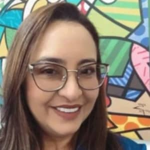
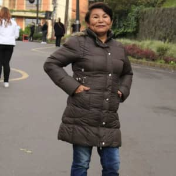
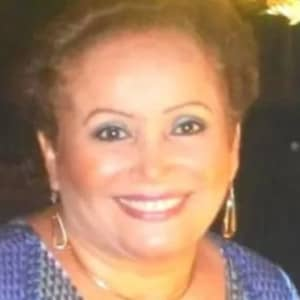
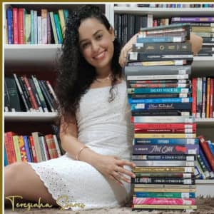
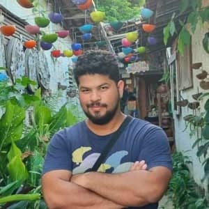
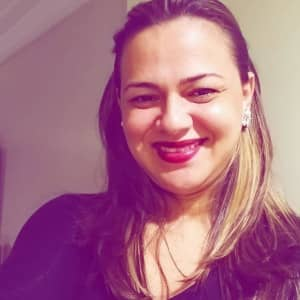
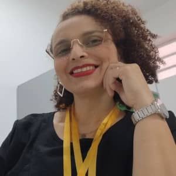
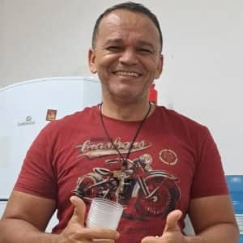
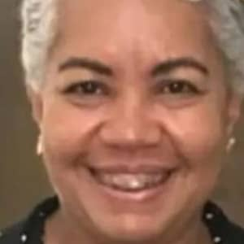

Corpo docente
Administração
Diretor(a):
- Otília Cristiane Bezerra e Silva

Coordenador(a):
- Jeane Ferreira Pereira Rocha

- Maria Edna Nogueira

- Paulo Rogério Nunes Costa

Secretária:
- Eliane dos Santos da Cunha

Assessora Financeira:
- Francisca Lidiane F.Saraiva

Biblioteca
- Hada Batista Ferreira

- Maria Eliomar Diniz Monteiro

Professores da base comum e diversificada
Linguagens e Códigos
- 1. Língua Portuguesa
- Vládia
- Terezinha

- Luís Claúdio de Almeida Ramos

- 2. Lingua Inglesa
- Messalina Karoline Oliveira Lod
- 3. Lingua Espanhola
- Lívia Maria do Rego Pinheiro

- 4. Artes
- Luís Claúdio de Almeida Ramos
- 5. Educação Física
Ciências Humanas
- 1. Filosofia
- 2. Geografia
- Antônio Airton da Silva Ferreira

- 3. História
- Maria Karuline da Costa Silva

- 4. Sociologia
- Joyce Andrade Ferreira de Sousa

Ciências da Natureza
- 1. Biologia
- Antônio Xavier de Oliveira Filho
- 2. Física
- Francisco Wendel Cipriano de Oliveira
- 3. Química
- Marlon Bezerra da Silva Junior
Ciências Exatas
- 1. Matemática
- Felipe Guimarães Ferreira
- Francisco Aristófanes Soares de Sousa

- José Nilton Garcia do Nascimento
Base Diversificada
- 1. Informática Básica
- Allan Kemps Cerqueira Lima
- 2. Mundo do Trabalho
- Antônio Airton da Silva Ferreira
- 3. Projeto de Vida
- José Nilton Garcia do Nascimento
Base Técnica
Química
- Francisca Eliene Sobral Coelha
- Tiago Rodriguês dos Santos
Secretariado
- Cristiane Jamile de Sousa Lima
- Heline Helena Peixoto Braga

- Maria Lucimar Neves de Almeida

Têxtil
- Larrisa Krissia Oliveira de Sousa
- Marcos Sabino de Oliveira Júnior
Vestuário
- Larrisa Krissia Oliveira de Sousa
- Leidiane Alves do Nascimento
Desenvolvimento de Sistemas
Colaboradores
Secretaria
- Antonia Bruna Oliveira Lemos
- Maria Luzia dos Santos Cunha
Conservação Patrimonial
- Antonia Elenilce Ribeiro da Silva
- Edson Duarte Pereira
- Fabiana Farias de Oliveira
Portaria
Cozinha (CHEF)
- Arimatéia Jerônimo Peroba
Cozinha
- Breno da Silva Brito
- José Maria Saraiva da Silva
- Zaquel da Silva Lopes
Segurança
- Francisco Marlon Pinheiro